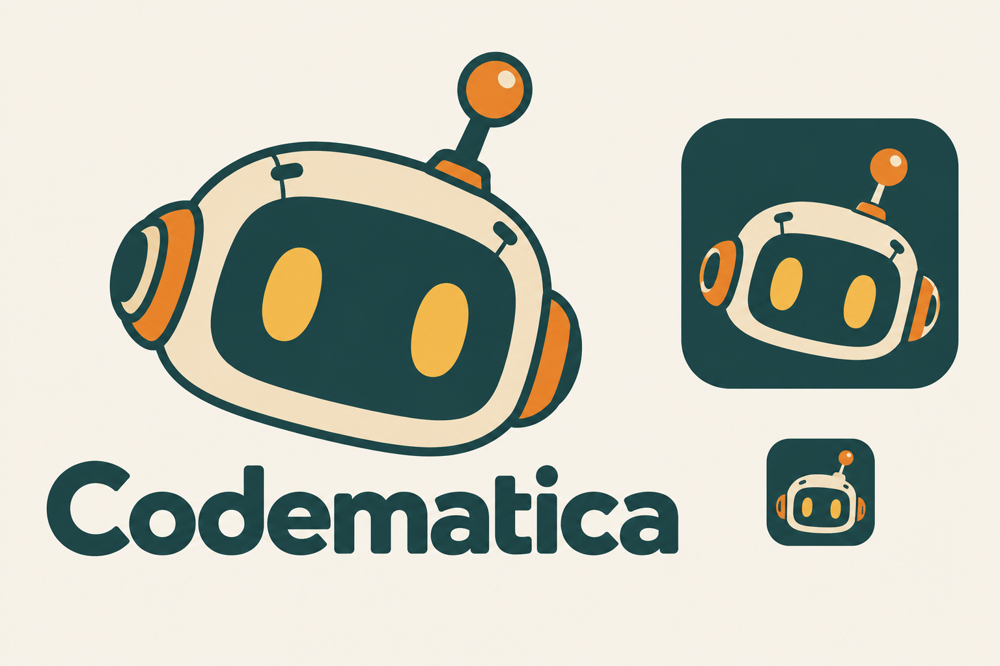
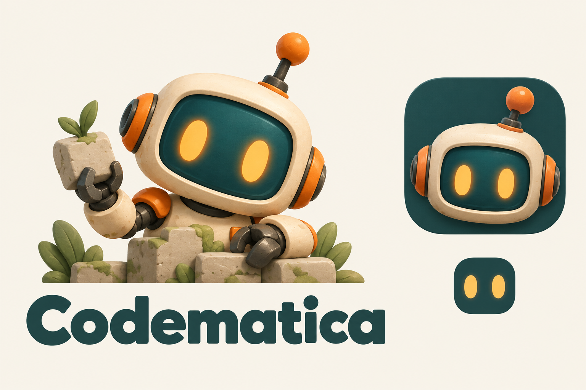
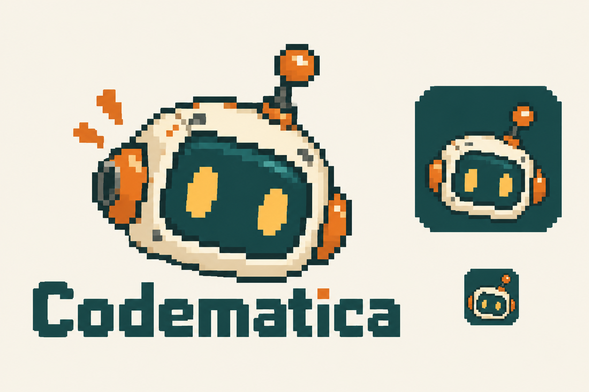
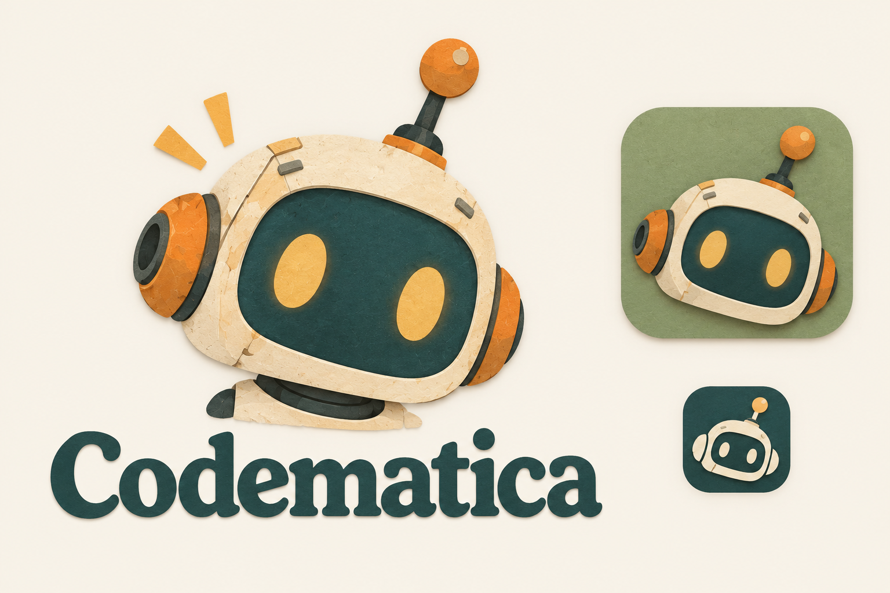
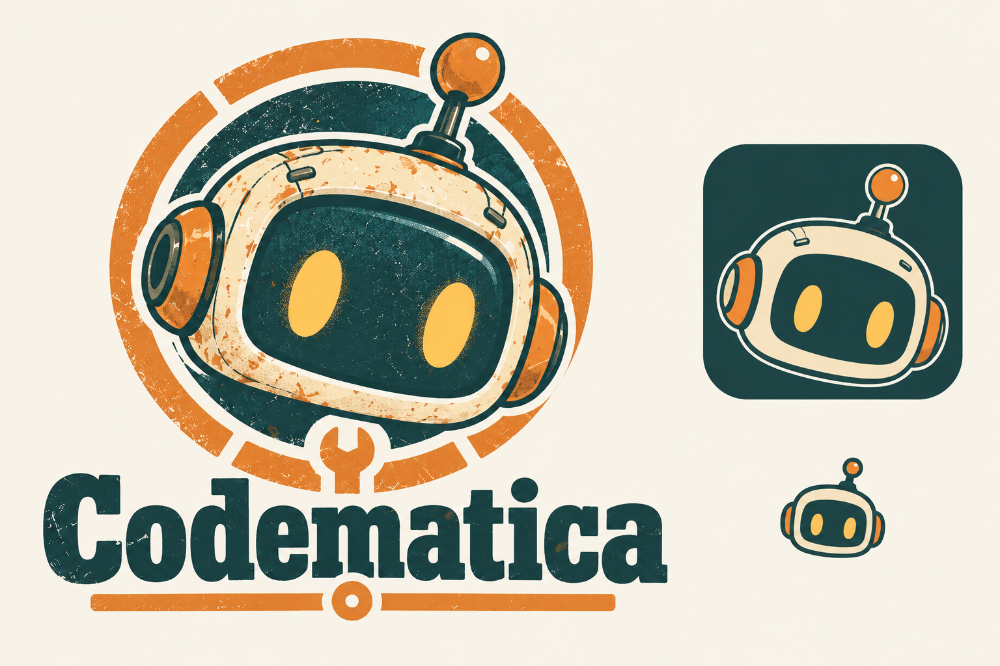
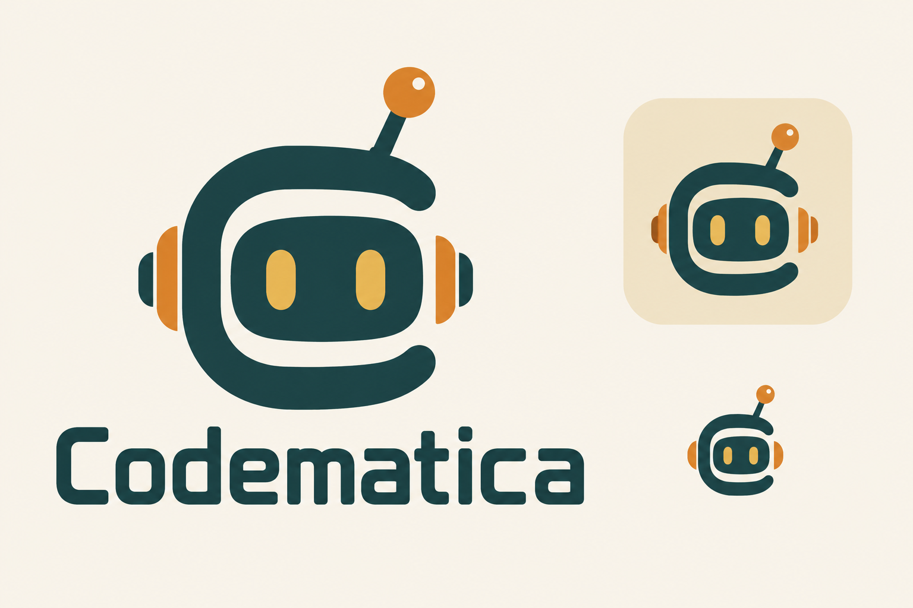

Flat Patch
Flat geometry · rounded lettering · bold, simple face

Each option pairs a logo with a matching favicon study.
Choose a number to refine.
Concepts for review.
Flat geometry · rounded lettering · bold, simple face

Matte 3D clay · soft light · tactile game character

Pixel art · bitmap lettering · retro coding adventure

Layered paper · soft texture · storybook atmosphere

Screenprint badge · slab lettering · repair workshop

Minimal linework · C/robot symbol · technical clarity
